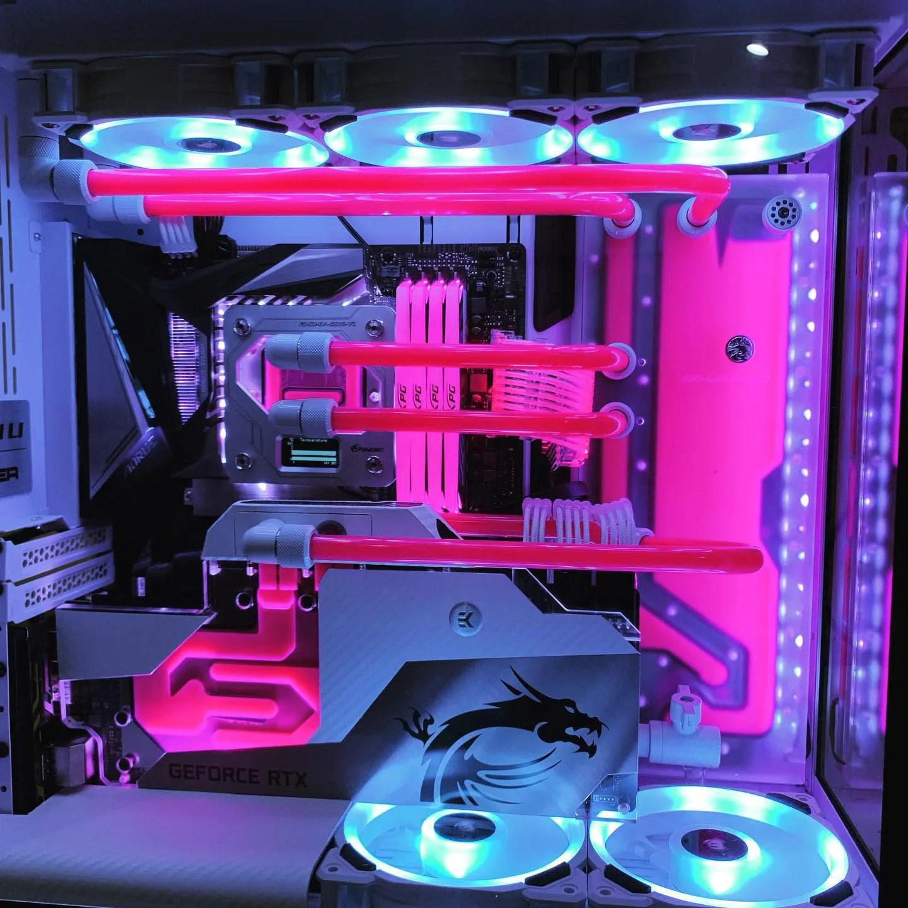

What is a personal computer?
Computers are able to process data and perform way faster than humans can. They can get a task done much faster compared to the time it would a human to complete the same task. Having access to a personal computer also gives you the opportunity to use the internet for free and other applications that can make things in your life easier. This in turn can help you learn new skills and possibly improve your quality and standard of life.